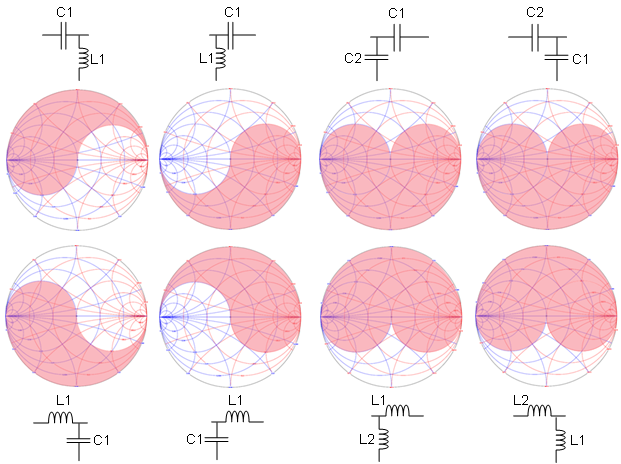
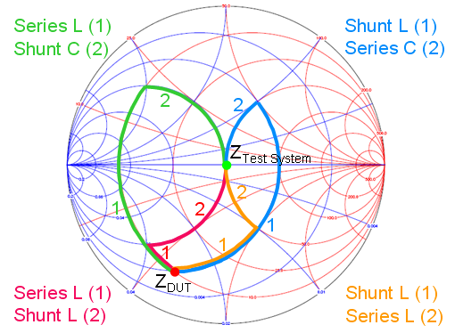
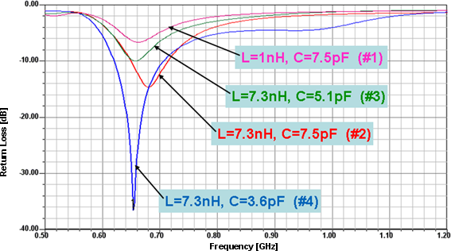

Two-element tuning with L-networks
- Simplest matching networks used as "basic blocks".
- There are eight distinct possibilities for L-network matching circuit (as shown in the graphic below).
- The C and L components of the two-element matching network can be arranged as a high-pass or low-pass configuration, based on the requirements for each DUT pin.
- Be aware of limitations for each matching structure - see the "Forbidden Region" for each
possible two-element topology.
=
Forbidden Region
Test system
DUT

- Choose all matching structures wisely, the shift in Impedance value causes each component on the Smith chart.
- Impedance matching element has to cancel any excess reactive component caused by the Impedance of the DUT pin. The graphic below shows a generic tuning example for Series C and L and Shunt (parallel) C and L in the Smith chart.

- Both single ended and differential configurations are possible.
- The tuning performance is narrow banded, even close frequencies need different tuning elements (example: 840 MHz and 925 MHz)
- Different frequency bands might need completely different topologies (example: 840 MHz and 1905 MHz).
Example
The graphic below shows a typical example for return loss performance and the influence of each tuning element (hint: follow the tuning step numbering):

Note The weak point of this design is the missing ability to adjust if
board parasites or additional length in routing pulls frequency away. For example, in the case
shown above you could likely tune to 725 MHz with some mediocre matching result, but you have no
chance for tuning out a DUT pin operated at 840 MHz.
Functional changes
- Introduced in SmarTest 7.1.4